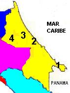
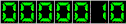

| Ir a anterior | Ir a principal |
Consejo Nacional de
Producción
Direcciones Regionales
DIRECCIÓN REGIONAL HUETAR ATLÁNTICA |
|
|  | Ing. José Miguel Zúñiga L., Director
Regional Ing. Saúl Calderón M., Unidad Ejecución Operativa Bach. Marvin Arias Z., Unidad Servicios de Apoyo Guácimo, Limón, Costa Rica Tel: (506) 716-6091 / Fax: (506) 716-6089 e-mail: rhatl@cnp.go.cr |
| SUBREGIONES | |
| 1.TALAMANCA Bri-Bri |
Ing. Melvin Díaz Q., Jefe
E-mail: srtalam@cnp.go.cr Tel: (506) 758-4512 Fax: (506) 758-4155 |
| 2.MATINA Batáan |
Ing. Wálter Martínez P., Jefe E-mail: srmatina@cnp.go.cr
Tel: (506) 718-7191 Fax: (506) 718-6824 |
| 3.SIQUIRRES Siquirres |
Ing. Jorge Delgado M., Jefe E-mail: srsiquirr@cnp.go.cr
Tel: (506) 768-6106 Fax: (506) 768-6107 |
| 4.POCOCÍ Guápiles |
Agr. Willy Camacho B.,
Jefe E-mail: srpococi@cnp.go.cr Tel: (506) 763-3039 Fax (506) 763-3141 |
 |
Contador funcionando desde el 08 de octubre